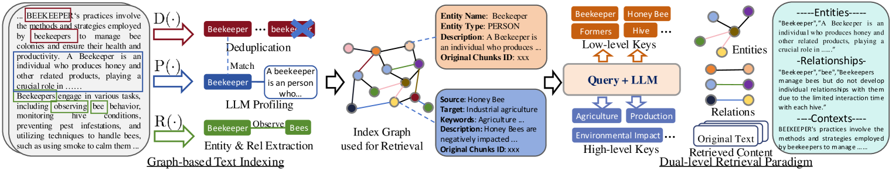

03 / 05
LightRAG Architecture
Figure 1Overall architecture of the proposed LightRAG framework — Graph-based Text Indexing (좌) + Dual-level Retrieval Paradigm (우)

R(·) Entity·Rel 추출 → P(·) LLM Profiling → D(·) Dedupe → Index Graph 생성
Query → Low-level Keys + High-level Keys → Entities · Relations · Contexts → LLM Response
Incremental Update: 신규 문서가 들어와도 전체 인덱스 재구축 불필요 — 노드/엣지 합집합으로 즉시 통합